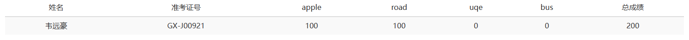
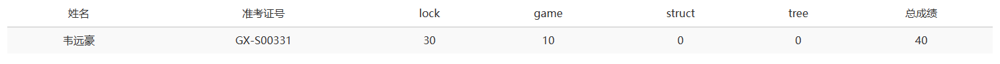

本记记录了本人第一次参加 CSP-J/S 的经历。
初赛极限压线，两个都过了。
认证地点离我们学校好远，而且八点多就开考了，所以就到考场附近的酒店住了一夜。
复习了一下算法。
今天一大早就起来，急匆匆赶往考场。
在考场附近吃了早餐，就进了认证学校。
志愿者在门口发号码牌，号码牌还做错了
八点进考场，27分发题目，30开始答题。
看T1，想了半个小时，发现了一个 O(1) 答法，样例没问题，手搓的几个数据也没有问题，过！
T2，第一眼看是模拟，然后写出来一坨屎，还没过样例
然后先把 T3 T4 的样例输了，发现还有一个小时，就把 T2 代码重构了，用了贪心。
结果重构成功了！撒花！
重构完了还有几分钟，摆。
考完后，老师要我们检查我们提交的代码，花了半个小时。
半个小时中，我发现竟然有网，就登上 luogu 看了看。
然后，发了个犇
CSP-J考场上用机房发个犇犇^o^
闲的
考完检查完已经十二点半了，吃了饭然后复习了一下，马上又到 S 组了。
两点 S 组检查，三十开考。
第一题完全看不懂，输样例。
第二题暴力。
第三四题输样例。
总结：摆一一烂
六点半结束。
14:00，所有人听令！冲进 NOI报名网站 查分！ 一一来自zhangjinxuan的号召
冲啊！！！
怀着忐忑的心情，我打电话给了我爸爸，让他帮我查询成绩。
最终，知道的我的成绩


J 一等，S 没奖。
对于一个只学习了一年的蒟蒻来说，已经非常不错了！
撒花~
*★,°*.☆ \(￣▽￣)/ ☆.*°★*
这次是我第一次参加 CSP 比赛。能取得这样的成绩我认为已经很不错了。以后要更加努力，争取明年 S 一等，进入 NOIP ！
祝各位 OIer 都能取得自己心仪的成绩！
发布时间：2023-11-1